3D Printing Project cont. with CAD tools
Below are my experience using CAD tools for the first time. This project reflection includes 2 projects using TinkerCAD and 1 project using Fusion360.
TinkerCAD Project 1: Lunar New Year Dragon 3D Print
Conceptualization and Design
The project began with the intention to commemorate the Lunar New Year (2024 Year of Dragon) through a symbolic representation using 3D printing. The choice to include culturally significant elements—such as the dragon for prosperity, the maneki-neko cat for wealth, the pearl for wisdom, and the yellow star representing Vietnam flag—was driven by a desire to capture a multifaceted symbol of hope and celebration. The initial conceptual phase involved sketching the layout and considering how each element would interact within the space, ensuring visibility and aesthetic harmony.
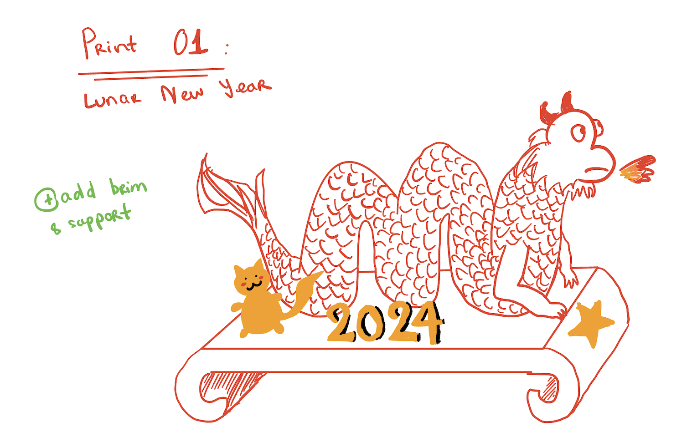Transition to CAD
Moving from concept to CAD, I utilized Tinkercad to digitally sculpt my vision. This phase was crucial for visualizing the spatial arrangement and adjusting the scale of each element to maintain proportionality and balance. TinkerCad's intuitive interface facilitated the experimentation with different layouts, but also posed limitations in terms of precision and advanced modeling features. This stage was critical for identifying potential print challenges, such as overhangs and the need for supports, which were unfortunately overlooked during the initial design phase.
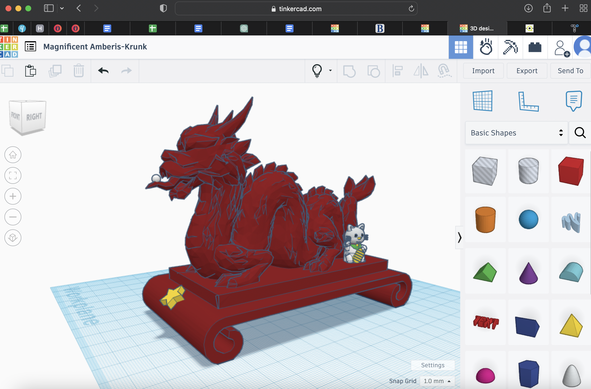 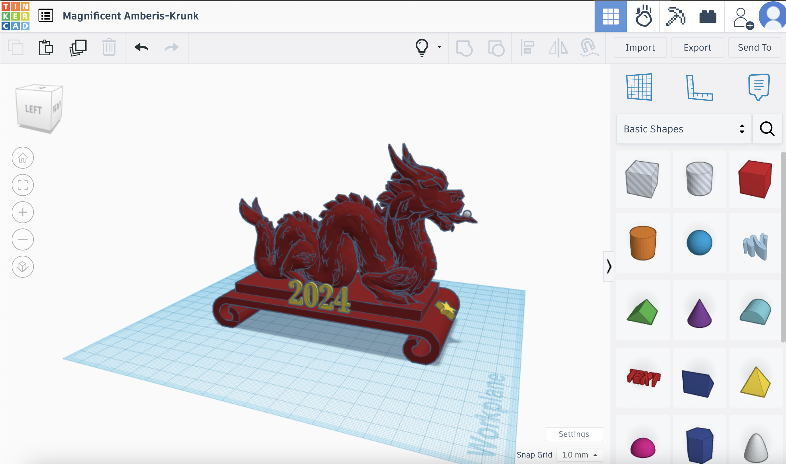CAM and Print Settings
The CAM process involved translating the CAD model into G-code using Prusa Slicer, where specific print settings were determined:
-
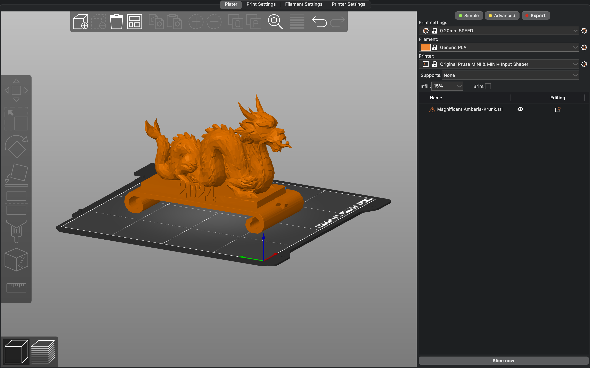
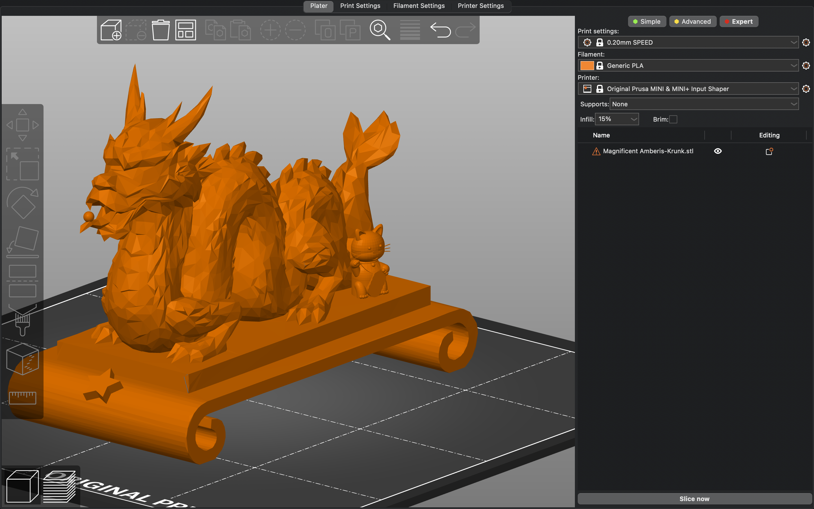
- Layer Height: I opted for a 0.2 mm layer height, balancing detail and print time.
- Infill: A 15% infill was selected to ensure structural integrity without excessive material use. 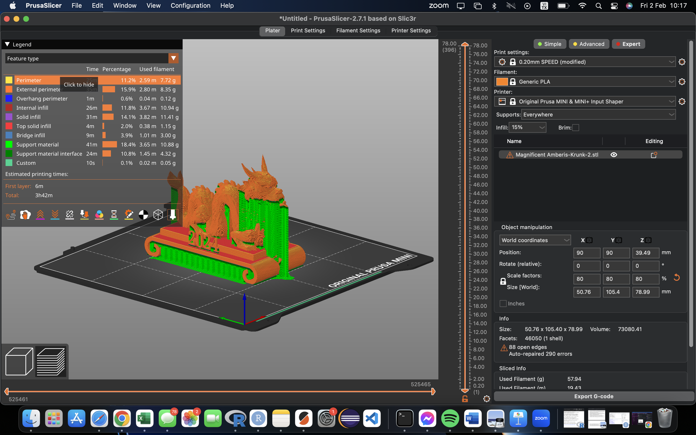
- Supports: Initially omitted, resulting in a failed first print due to the dragon's complex overhangs. The second attempt included a brim for added stability, although, in hindsight, a more targeted support strategy or an organic brim could have offered a better solution.
 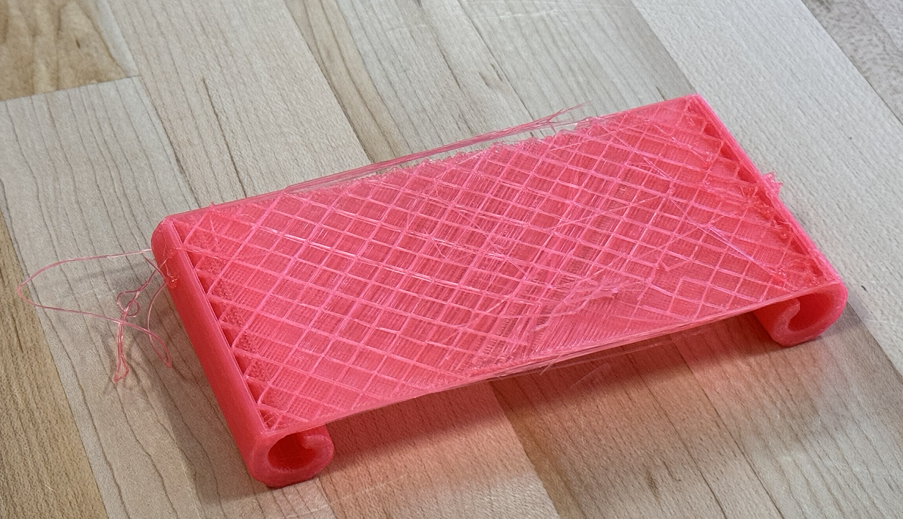
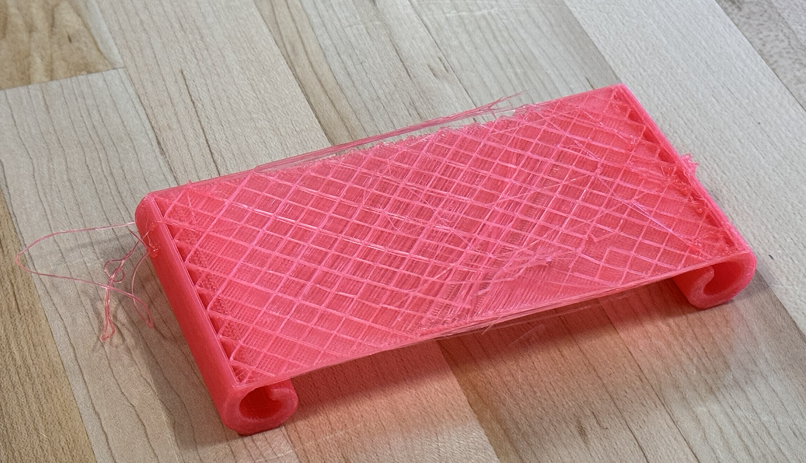
Analysis of the Outcome
The final print, while successful on the second attempt, highlighted several areas for optimization. The omission of adequate supports in the initial print underscored the importance of anticipating structural needs based on the design's complexity. The use of a brim, while effective, introduced challenges in post-processing, suggesting that alternative support strategies could yield cleaner results with less effort. During the process of removing the brim, the "2024" text was unfortunately broke off the 3d print due to its small ans thin size
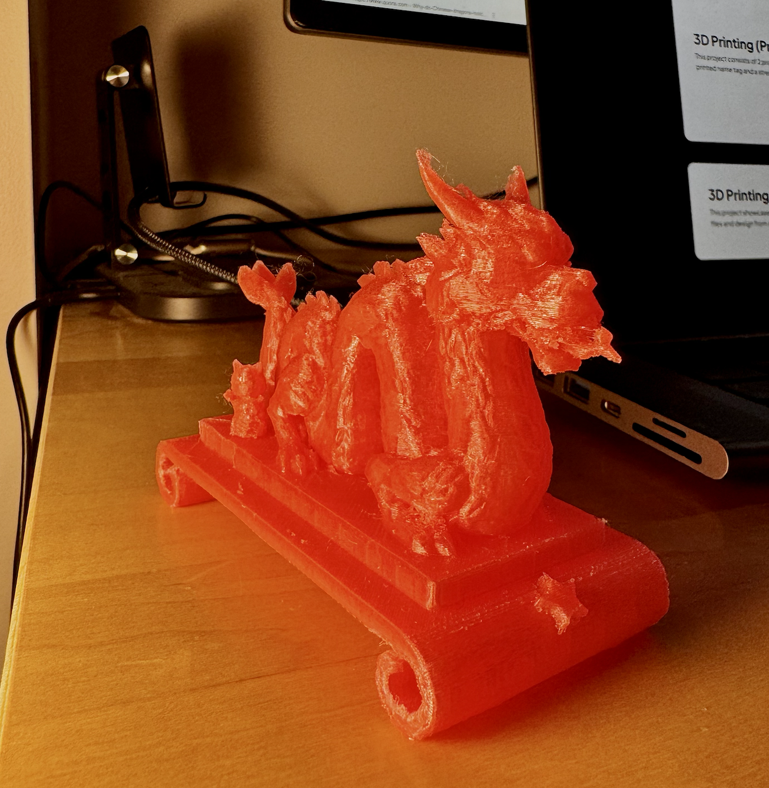 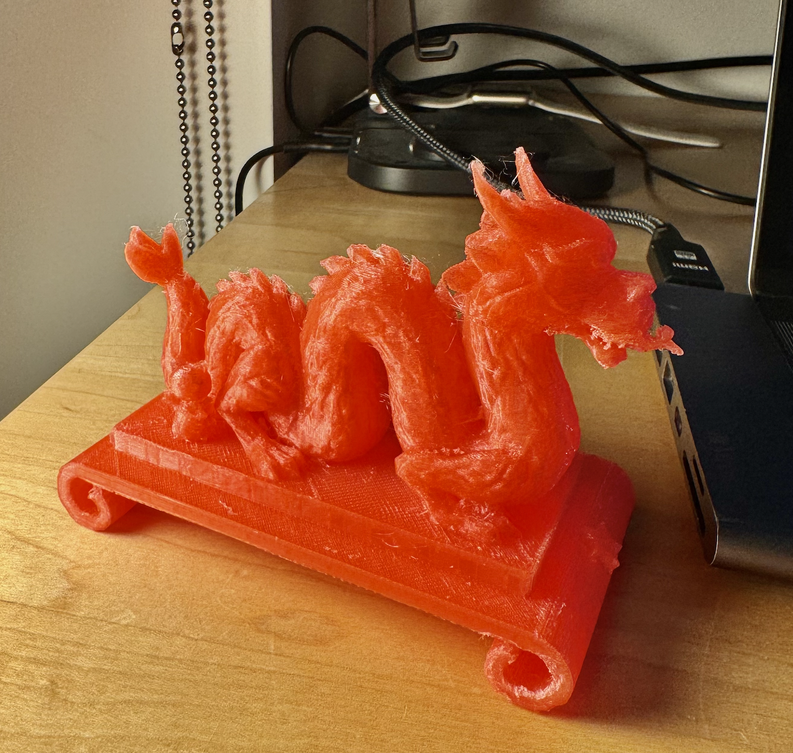Reflections on Goal Achievement and Future Optimization
The project achieved its primary goal of creating a symbolic representation for the Lunar New Year. However, the journey revealed critical insights into the importance of a holistic approach to 3D printing, where design decisions are informed by an understanding of both the capabilities and limitations of the printing process. Future projects will benefit from a more nuanced approach to supports and possibly exploring advanced CAD tools for greater control over fine details and support structures.
Potential Improvements
Potential improvements include experimenting with different support settings or software features for more precise control, reducing post-processing work, spending more time in the slicing phase to anticipate problems, and testing with different materials or adjusting settings like print speed or temperature to improve quality and reduce errors.
Conclusion
This project served as a profound learning experience, demonstrating that successful 3D printing is as much about planning and foresight as it is about creativity and technical skill. The insights gained from each phase of the design and printing process will inform my approach to future projects, ensuring a more efficient, informed, and nuanced application of 3D printing technology.
3D Print Links:
1. Dragon: https://thangs.com/designer/ChelsCCT%20%28ChelseyCreatesThings%29/3d-model/Chinese%20Dragon%20-Platform%20Statue-985910
2. Other 3D files was directly imported from TinkerCAD
TinkerCAD Project 2: Disney Symbol becomes Ocean Scene Print
Introduction
After the first fail print of the dragon project, I decided to try a simpler 3D printing project. My goal was to gain more experience and confidence in my 3D printing skills before revisiting more complex designs. I chose to create an ornament featuring a Disney Princess symbol, reimagined as an ocean scene complete with a house and turtle, symbolizing tranquility and adventure. This project was not only a test of technical skills but also a step back to reflect on the learning process and the importance of resilience in scientific endeavors.
Design and Execution
The design process for this project was significantly streamlined, thanks to the lessons learned from the previous project. Using TinkerCAD, I imported a file representing the ocean, which served as the backdrop for the Disney Princess symbol transformation. The addition of a house and turtle to the scene was symbolic, aiming to infuse the piece with a sense of narrative and depth, while ensuring the design remained flat and manageable for printing.
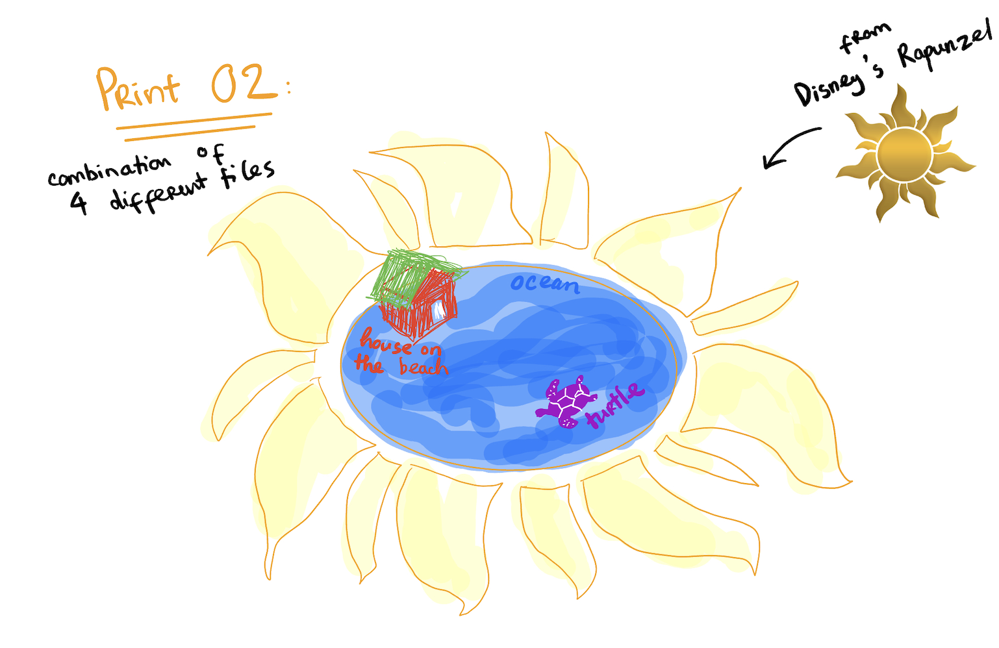This project's simplicity allowed for a smooth transition from design to print, with no need for complex support structures or extensive post-processing. The print settings were carefully selected to match the design's requirements:


- Layer Height: Standard 0.2 mm to ensure a good balance between detail and print time.
- Infill: A 15% infill was selected to ensure structural integrity without excessive material use.
- Supports: Unnecessary due to the design's simplicity, which greatly reduced the likelihood of printing failures. 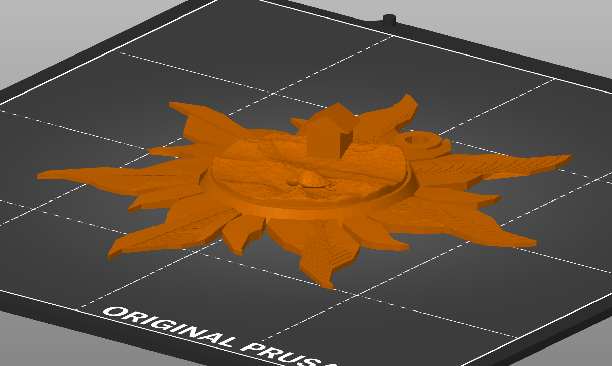 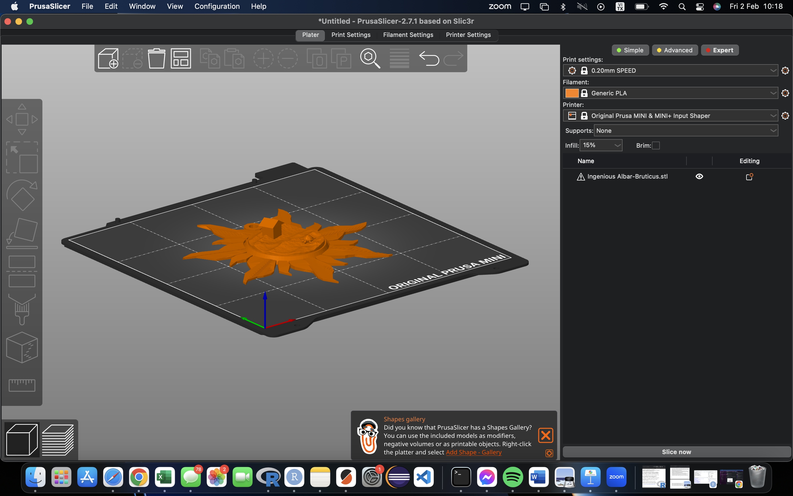
Outcome and Reflections
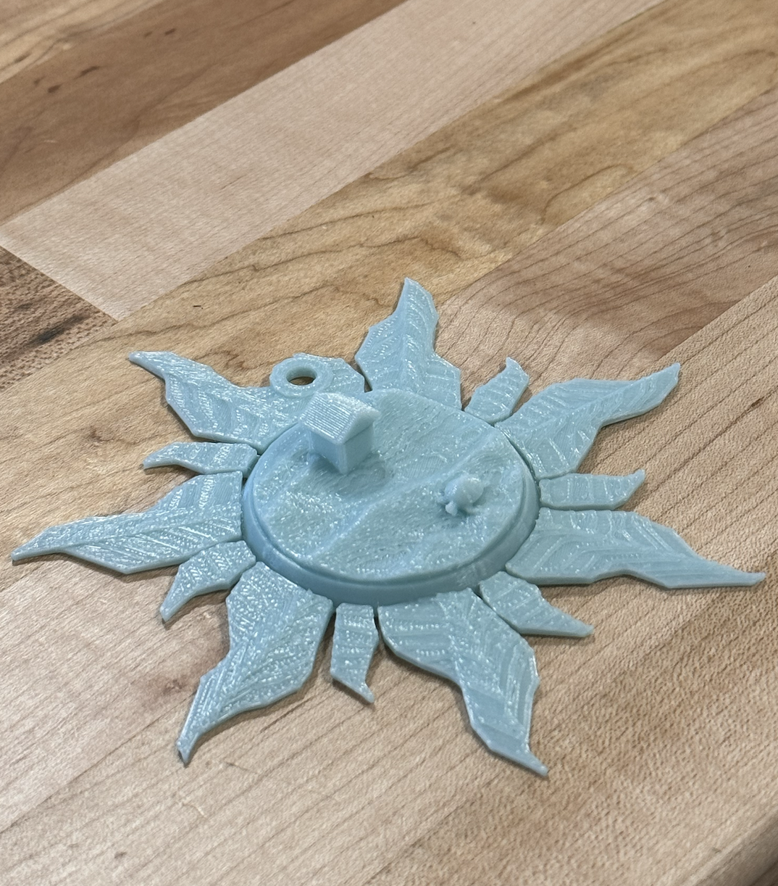The success of this project on the first attempt was incredibly motivating. It reinforced the value of stepping back and tackling smaller challenges to build confidence and skills gradually. This approach not only allowed for a successful print but also provided a crucial morale boost, encouraging me to not give up on more complex projects like the dragon.
Scientific Mindset and Perseverance
This experience highlighted the scientific mindset of experimentation, learning from failures, and persistently challenging oneself. The immediate success of this project, contrasted with the initial failure of the dragon project, served as a practical reminder of the importance of resilience and adaptability in the face of challenges.
Future Directions
Encouraged by the success of this project, I am now more prepared to revisit complex designs with a renewed perspective and improved problem-solving strategies. The lessons learned here will be invaluable for future projects, emphasizing the importance of project selection, incremental learning, and the scientific principle of trial and error.
Conclusion
The Disney Princess symbol turned ocean scene project was a crucial step in my 3D printing journey, offering a moment of reflection and learning. It proved that facing challenges with a strategic approach and a resilient mindset can lead to significant personal and technical growth. This project has reinvigorated my passion for 3D printing, reminding me that in science and learning, perseverance is key to overcoming obstacles and achieving success.
3D Print Links:
1. Ocean Base: https://www.thingiverse.com/thing:5321855
2. Turtle: https://www.thingiverse.com/thing:1666174
3. Disney: https://www.thingiverse.com/thing:392505
4. Small House: built in TinkerCAD
Fusion360 Project: Headphone Handle Print
Conceptualization
The journey began with the necessity for a practical and elegant solution to store my Sony headphones. The concept phase involved sketching the initial idea on an iPad, focusing on functionality and aesthetics. This step was crucial for visualizing the project's scope and determining the essential features of the headphone handle, such as size, shape, and the method of attachment to the wall.
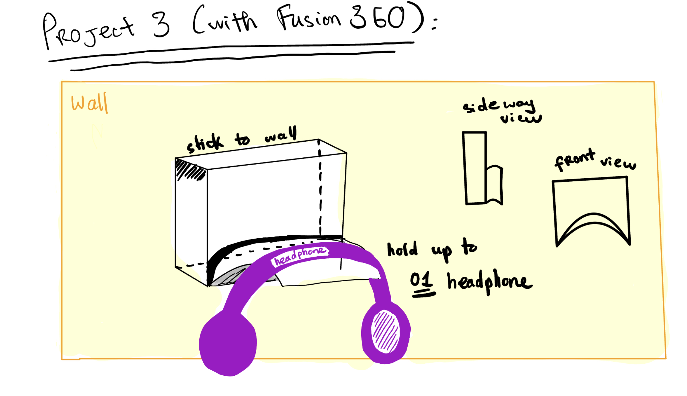Design in Fusion360
Transitioning from a sketch to a digital model, I used Fusion 360 to bring my concept to life. This phase was instrumental in transforming abstract ideas into a tangible design. Starting with a basic box, I applied extrusion and cutting techniques to refine the shape, paying close attention to the dimensions of my headphones to ensure a perfect fit. The CAD process allowed me to iteratively adjust the design, optimizing both for structural integrity and visual appeal. This hands-on experience with Fusion 360 deepened my understanding of 3D modeling principles and tools.
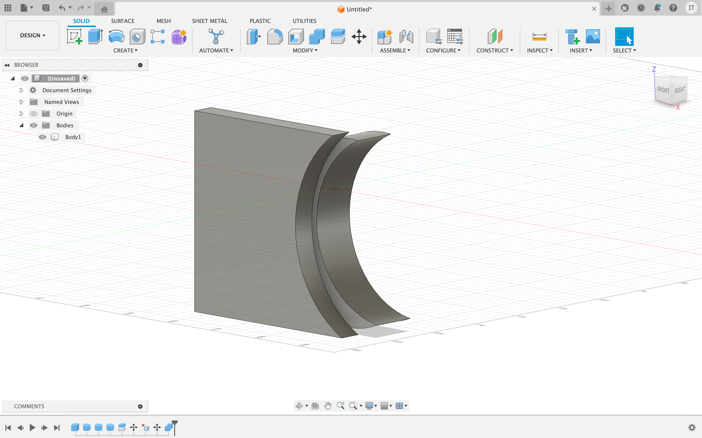 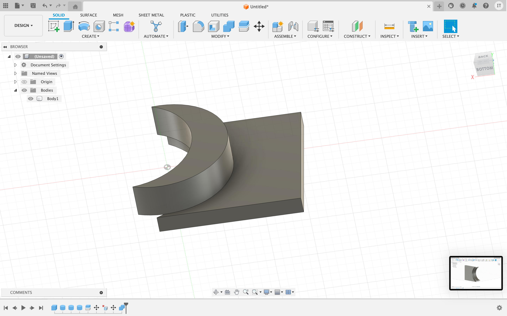 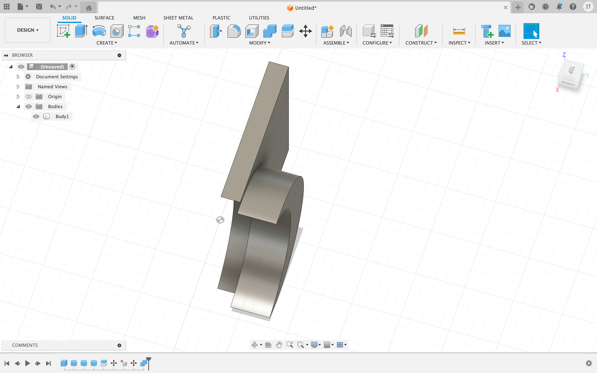 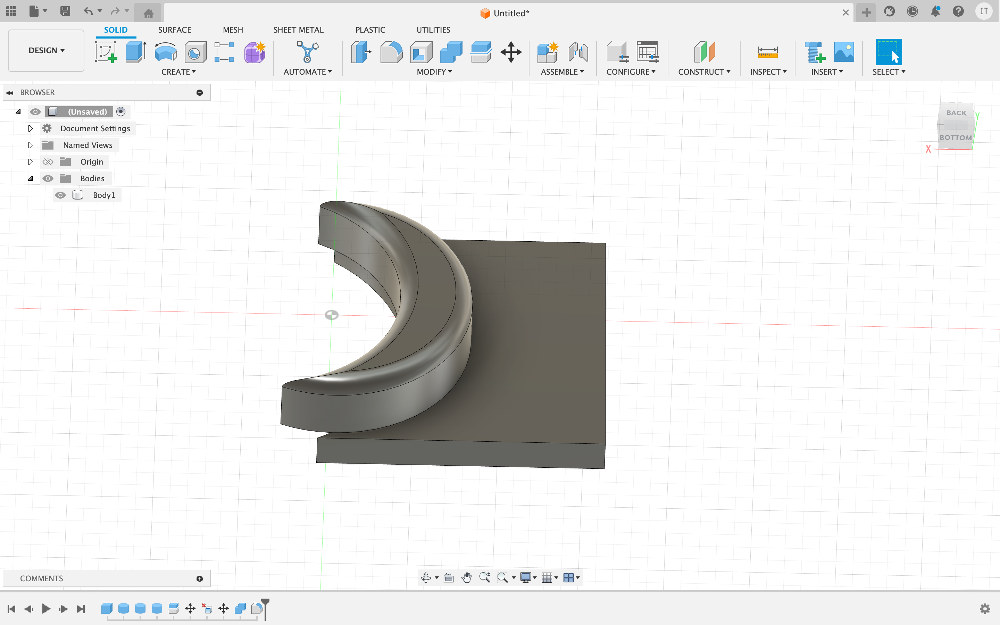CAM Process and Print Settings
The preparation for printing translated the CAD model into practical print instructions. In Prusa Slicer, I selected specific settings to balance quality, strength, and printing efficiency:
- Layer Height: Standard 0.2 mm to ensure a good balance between detail and print time.
- Infill: A 15% infill was selected to ensure structural integrity without excessive material use. 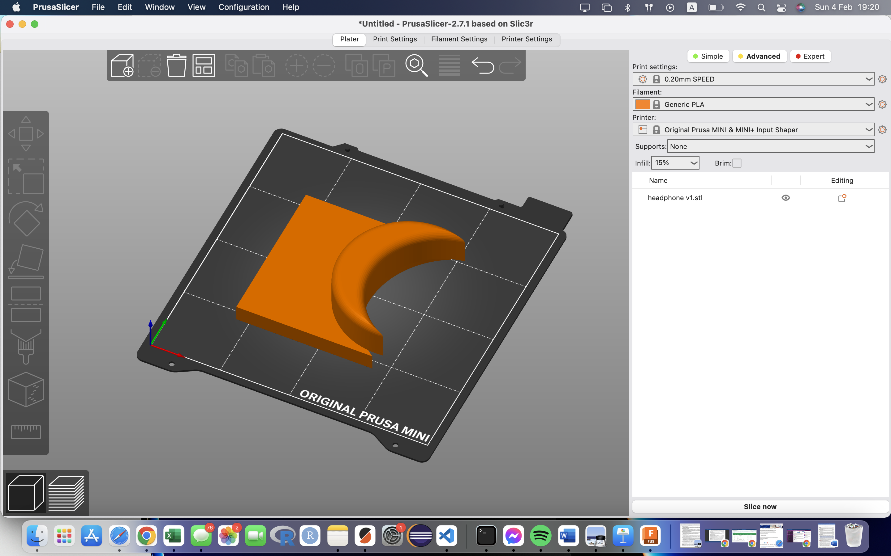 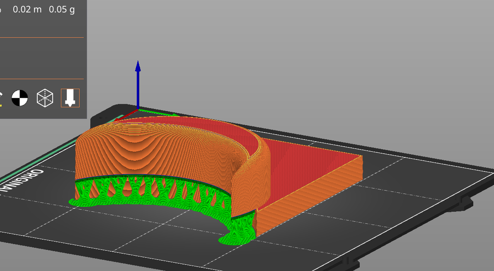
- Supports: Considering the design featured certain overhangs and complex shapes, supports were strategically included to maintain the integrity of these elements during the print. The decision on support placement and density was influenced by the desire to minimize post-processing work.
Outcome and Evaluation
The resulting 3D print met and exceeded my expectations. The headphone handle not only functioned as intended but also showcased a high level of craftsmanship, from the smoothness of its surfaces to the precision of its fit. This success was a direct outcome of the careful planning and adjustments made throughout the design and printing process.
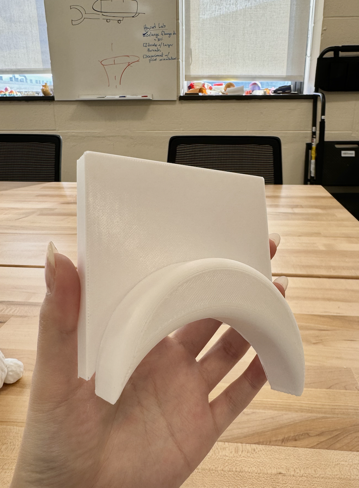 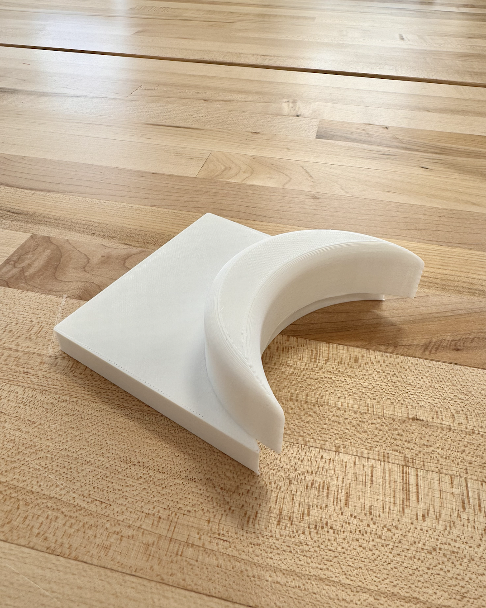Reflections on Optimization and Future Improvements
Reflecting on the project, I see opportunities for further optimization. For instance, experimenting with different layer heights or infill patterns could enhance the handle's strength-to-weight ratio. Additionally, exploring alternative support strategies might reduce the need for post-processing, streamlining the production of similar items in the future.
Conclusion
The custom headphone handle project was a comprehensive exercise in applying 3D printing technology from conceptualization through to the final print. However, I miscalculated during the designing and sketching process so the 3D print ended up smaller than expected. Scaling will be something I'll improve on. Each step of the process, from sketching to CAD modeling, and from CAM preparation to the final print settings, played a crucial role in achieving a successful outcome. This project not only fulfilled its initial goal but also served as a valuable learning experience, offering insights into how I can enhance my design and printing strategies for future endeavors.